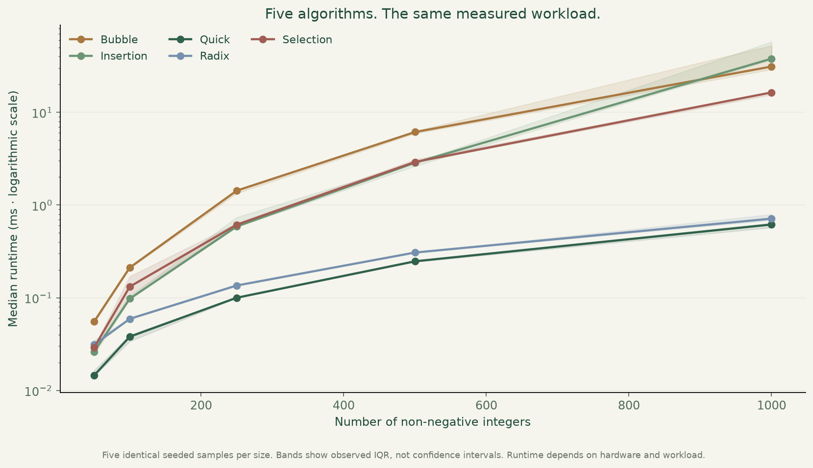

Make local exchanges.
Compare neighbours and swap those out of order. Stop early if a pass makes no swaps.
Three approaches. The same starting values. Follow the comparisons and swaps, one useful step at a time.
Each # marks an item's position in the starting input, not its value or rank. With many items, scroll the chart horizontally to read all labels.
These counts come from the illustrated trace. Swaps exchange different indices, including equal values; self placements do not count.
These are complete trace totals, not elapsed time. Explore any row to follow its actual work.
Stability means preserving equal items' original relative order for every supported input. The table reports only this example: preserving order once is not a proof of stability. Choose Repeated values or a custom input with repeats, then enable original positions to follow the items.
| Algorithm | Key comparisons | Index swaps | Equal-value order at finish | Inspect |
|---|
Comparisons count tests between data values, not loop bounds. Swaps exchange different indices and can exchange equal values. These JavaScript trace counts are not measured Python runtimes. Scroll the table horizontally on narrow screens to inspect every column.
Try an already sorted input: bubble sort can stop after a swap-free pass, while a rightmost pivot can leave quicksort with uneven partitions. Input shape matters; fewer swaps alone do not establish a faster implementation.
Compare neighbours and swap those out of order. Stop early if a pass makes no swaps.
Scan the remaining values, then put the smallest into its final position.
Use the last value as pivot, partition with a strict less-than comparison, then repeat on each side.
The Python project compares all five implementations, including insertion and radix sorting, on identical seeded inputs. Open the case study for raw measurements, assumptions and limitations.
Explore the measured results ↗